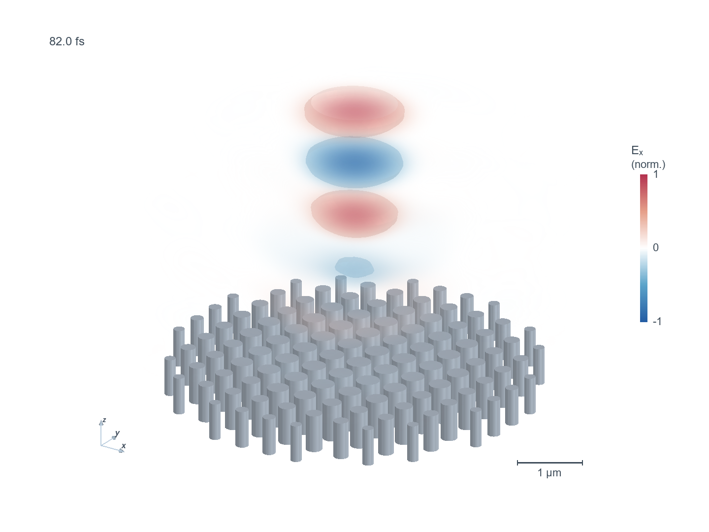
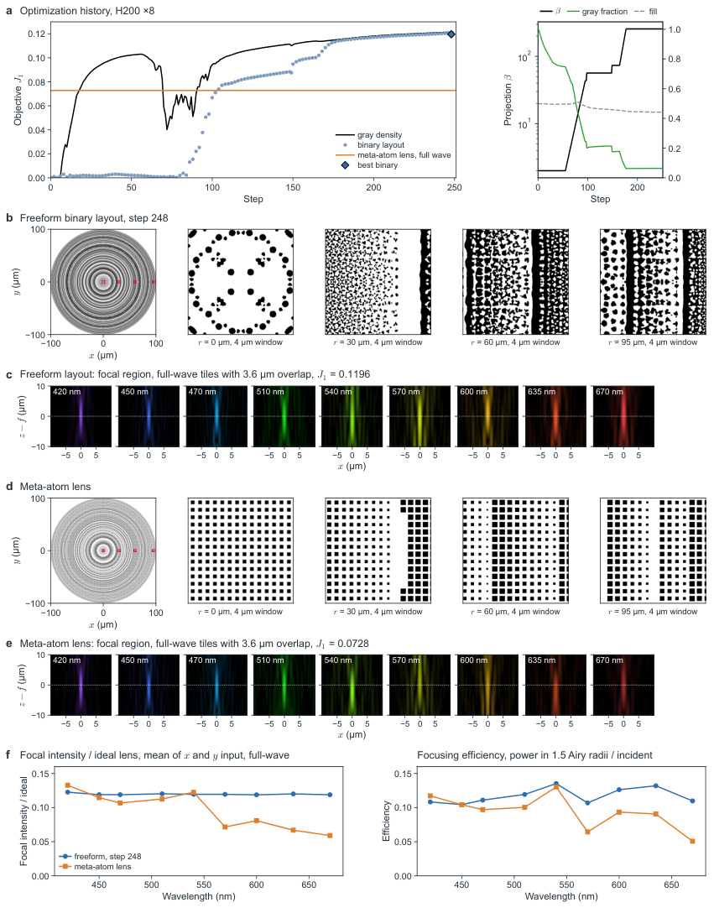
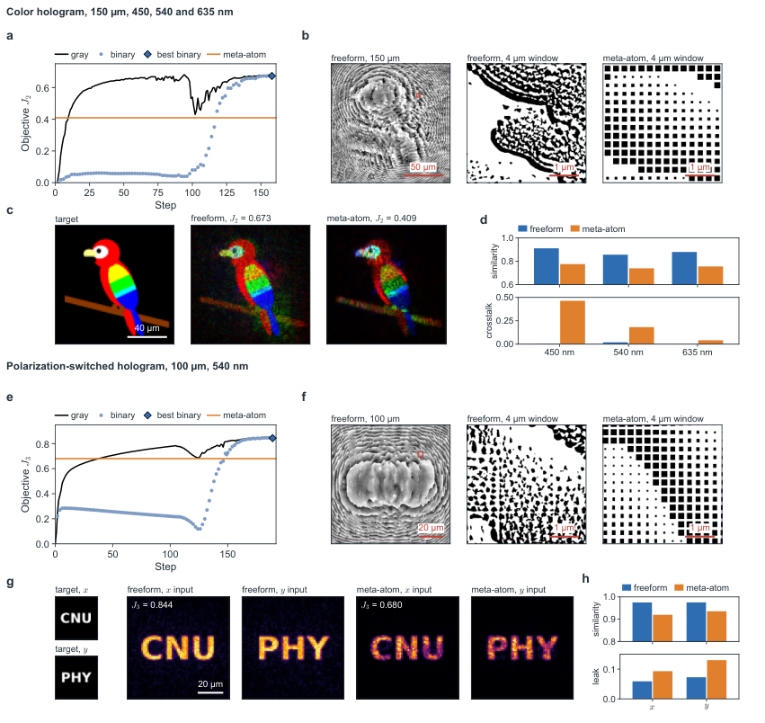
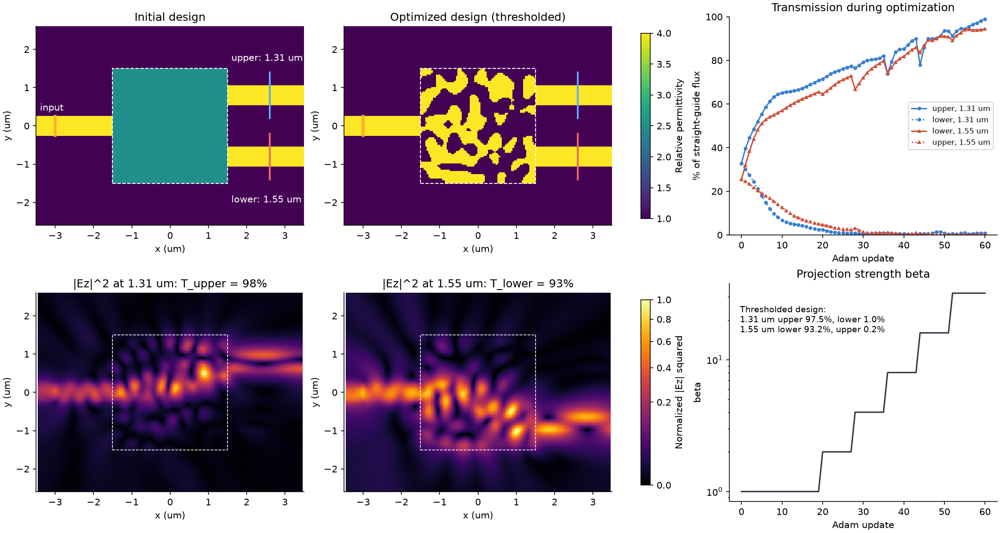

About
I design optical devices that are judged by what a downstream system can do with the light: an image sensor, a neural network or a display. My work combines metasurface inverse design, information-based objectives and GPU full-wave simulation.
More broadly, I work in computational physics: I write GPU solvers and differentiable simulations for problems in and beyond optics, from Maxwell's equations to shallow-water flood modelling.
I work with Prof. Yeonsang Park in the Department of Physics at Chungnam National University.
Research
Metasurface color routers
Pixel-scale routers that sort light by color onto image-sensor pixels, optimized for imaging information and inverse-designed with deep-learning-accelerated search.
Information-optimized metalenses
Color metalenses for cameras whose design objective is the information the sensor receives about the scene, not a single focal spot.
GPU full-wave inverse design
Differentiable FDTD with discrete adjoints and host-streamed execution, used to design freeform metasurfaces at full aperture.
Photonic computing
Thin-film lithium niobate microring cascades that approximate the exponential for softmax, and photonic block selection for long-context language-model inference.
Computational physics
GPU numerical methods beyond a single application: finite-difference time-domain electromagnetics, discrete adjoints for gradient-based design, and a GPU shallow-water solver used to reconstruct the 2026 Bhote Koshi–Trishuli flood in Nepal.
Software
TorchFDTD
Open-source GPU FDTD for photonics with fused CUDA kernels, PyTorch adjoint gradients and a browser CAD workbench. MIT licensed and installable with pip install torchfdtd.

Selected results



Publications
- 2026Metasurface color routers inverse-designed with a deep-learning-accelerated genetic algorithm for high-efficiency imagingJournalReports on Progress in Physics 89(9), 097901
- 2026TorchFDTD: GPU-accelerated finite-difference time-domain simulation with discrete adjoints and host-streamed execution for photonic inverse designPreprint
- 2026Information-optimized color metalenses for camera imagingPreprint
- 2026Imaging-system-aware color routers optimized for imaging informationPreprint
- 2026PRISM: Breaking the O(n) memory wall in long-context LLM inference via O(1) photonic block selectionPreprint
- 2026Photonic exponential approximation via cascaded TFLN microring resonators toward softmaxPreprint
- 2026A rock-ice avalanche and the 2026 Bhote Koshi–Trishuli flood, NepalPreprintEarthArXiv
- 2025Implementing an encrypted display with the electron-induced colour router arrayJournalLight: Science & Applications 14(1), 215